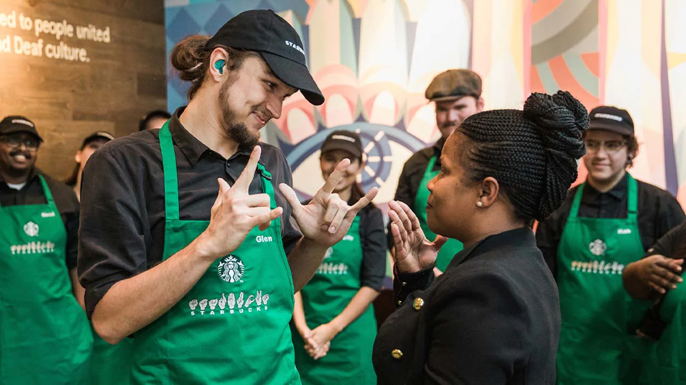

Nguồn Gốc
Câu chuyện của chúng tôi bắt đầu vào năm 1971 dọc theo những con đường lát đá cuội của khu chợ lịch sử Pike Place ở Seattle. Chính tại đây, Starbucks đã mở cửa hàng đầu tiên, cung cấp những hạt cà phê rang tươi, trà và gia vị từ khắp nơi trên thế giới để khách hàng mang về nhà. Tên của chúng tôi được lấy cảm hứng từ câu chuyện kinh điển “Moby-Dick,” gợi nhớ đến truyền thống đi biển của những nhà buôn cà phê đầu tiên.
Mười năm sau, một chàng trai trẻ người New York tên là Howard Schultz bước qua cánh cửa này và ngay từ ngụm cà phê đầu tiên, anh đã bị mê hoặc bởi hương vị cà phê của Starbucks. Sau khi gia nhập công ty vào năm 1982, một con đường lát đá cuội khác đã dẫn anh đến một khám phá mới. Đó là trong một chuyến đi đến Milan vào năm 1983, Howard lần đầu tiên trải nghiệm các quán cà phê ở Ý, và anh trở về Seattle với cảm hứng mang sự ấm áp và nghệ thuật của văn hóa cà phê Ý đến với Starbucks. Đến năm 1987, chúng tôi đã thay những chiếc tạp dề màu nâu bằng những chiếc tạp dề màu xanh lá cây và bắt đầu chương tiếp theo như một quán cà phê.
Starbucks nhanh chóng mở rộng đến Chicago và Vancouver, Canada rồi đến California, Washington, D.C. và New York. Đến năm 1996, chúng tôi vượt qua Thái Bình Dương để mở cửa hàng đầu tiên ở Nhật Bản, sau đó là Châu Âu vào năm 1998 và Trung Quốc vào năm 1999. Trong hai thập kỷ tiếp theo, chúng tôi đã phát triển để chào đón hàng triệu khách hàng mỗi tuần và trở thành một phần của cuộc sống của hàng chục ngàn khu phố trên khắp thế giới. Trong mọi việc chúng tôi làm, chúng tôi luôn cam kết với Sứ mệnh của mình: Với mỗi tách cà phê, với mỗi cuộc trò chuyện, với mỗi cộng đồng - chúng tôi nuôi dưỡng những khả năng vô hạn của sự kết nối giữa con người với con người.
- 1971: Starbucks được thành lập tại Seattle, Mỹ.
- 1987: Howard Schultz mua lại Starbucks và mở rộng ra toàn cầu.
- 1996: Cửa hàng đầu tiên ngoài Bắc Mỹ mở tại Tokyo, Nhật Bản.
- 2003: Starbucks mở cửa hàng đầu tiên tại Việt Nam.
- 2021: Kỷ niệm 50 năm thành lập Starbucks.
Coffee and Craft
Tại Starbucks, chúng tôi tin rằng cà phê ngon bắt đầu từ những hạt cà phê chất lượng cao. Chúng tôi lựa chọn tỉ mỉ từng hạt cà phê từ các nông trại trên khắp thế giới và chế biến chúng với tâm huyết và kỹ thuật tinh tế.

Our Partners
Starbucks không chỉ là nơi bạn thưởng thức cà phê, mà còn là một cộng đồng. Chúng tôi tự hào về đội ngũ nhân viên nhiệt huyết và những đối tác đáng tin cậy, những người giúp chúng tôi mang đến trải nghiệm tuyệt vời cho khách hàng.
